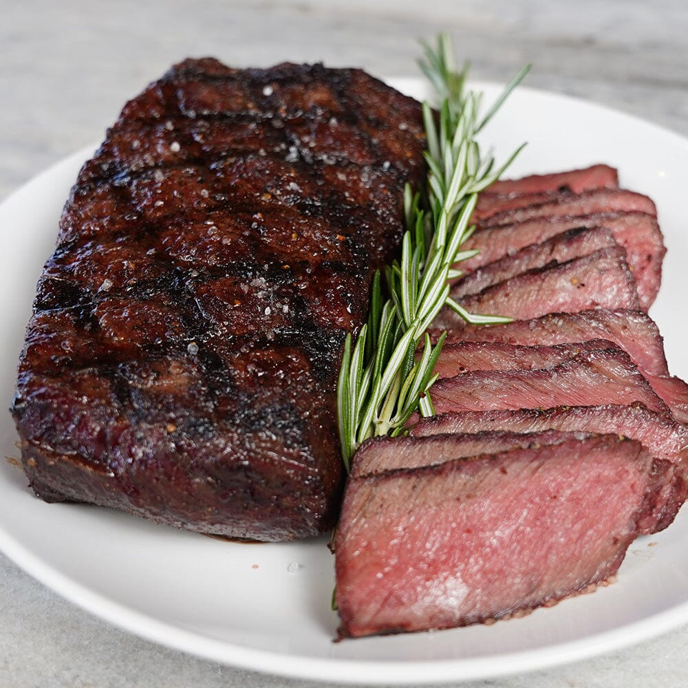

1. Prep the Steak. (Room Temperature & Seasoning) Take the steak out of the fridge 30-60 minutes before cooking to bring it to room temperature. Pat it dry with a paper towel for a perfect sear. Generously season both sides with salt and black pepper.
2. Heat the Pan & Sear the Steak Use a cast-iron skillet or heavy pan. Heat it over high heat until smoking hot. Add a tiny bit of oil (optional) and place the steak in the pan. Do not move it for 2-3 minutes—let it develop a crust. Flip and sear the other side for another 2-3 minutes.
3. Add Butter, Garlic, and Thyme (Basting) Reduce heat to medium-low. Add butter, smashed garlic, and thyme to the pan. Tilt the pan slightly and use a spoon to baste the steak by continuously pouring the melted butter over the top. Do this for 1-2 minutes.
4. Check for Doneness & Rest the Steak Use a meat thermometer to check: Rare: 120-125°F (49-52°C) Medium-Rare: 130-135°F (54-57°C) Medium: 140-145°F (60-63°C) Medium-Well: 150-155°F (65-68°C) Well-Done: 160°F+ (70°C+) Remove from the pan and let it rest for 5-10 minutes before slicing.
Pro Tips: Use thick-cut steaks (at least 1-inch thick) for best results. Don’t overcrowd the pan—cook one steak at a time if needed. Always rest the steak so the juices redistribute.
